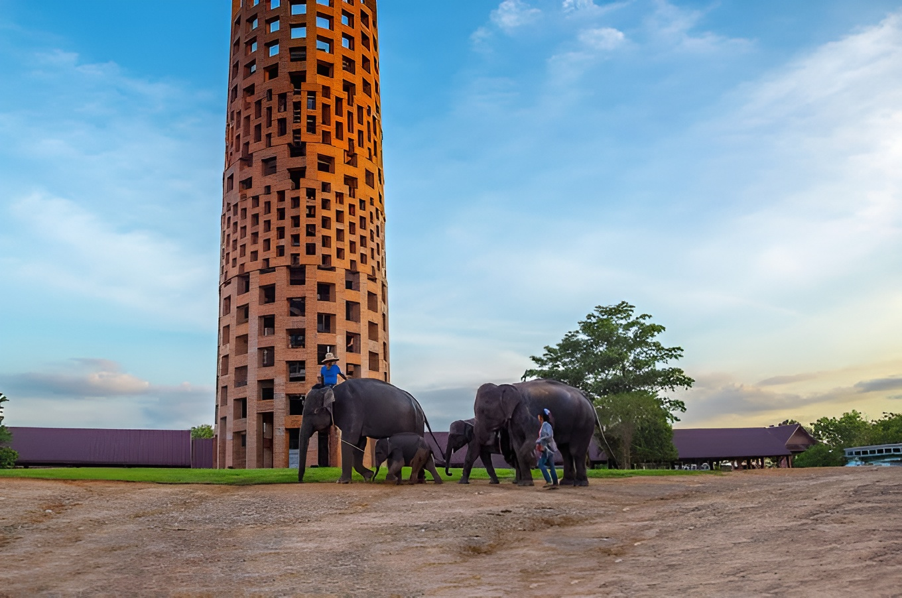
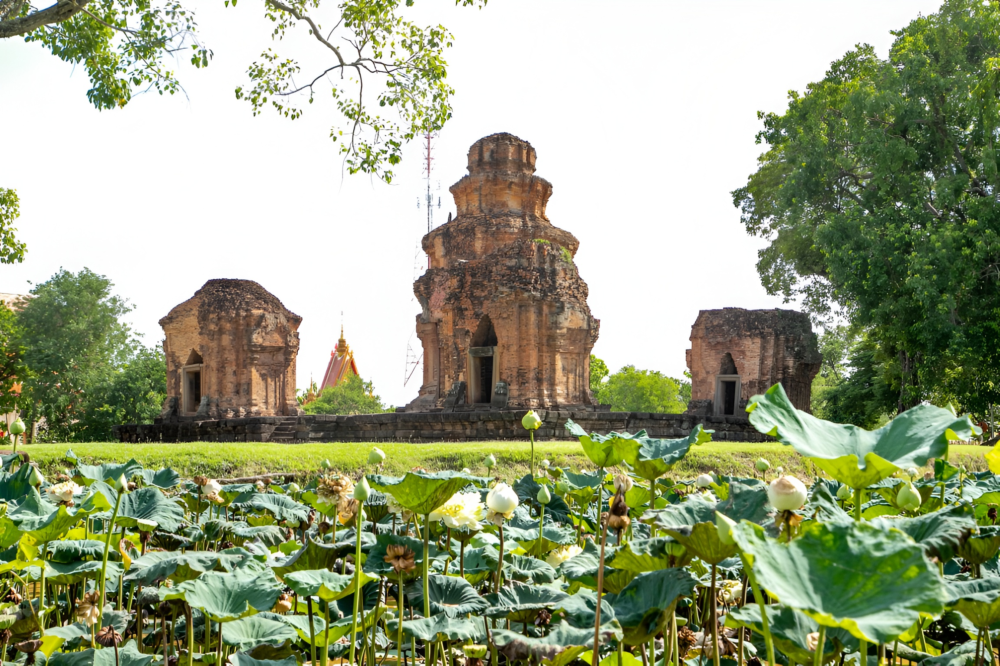
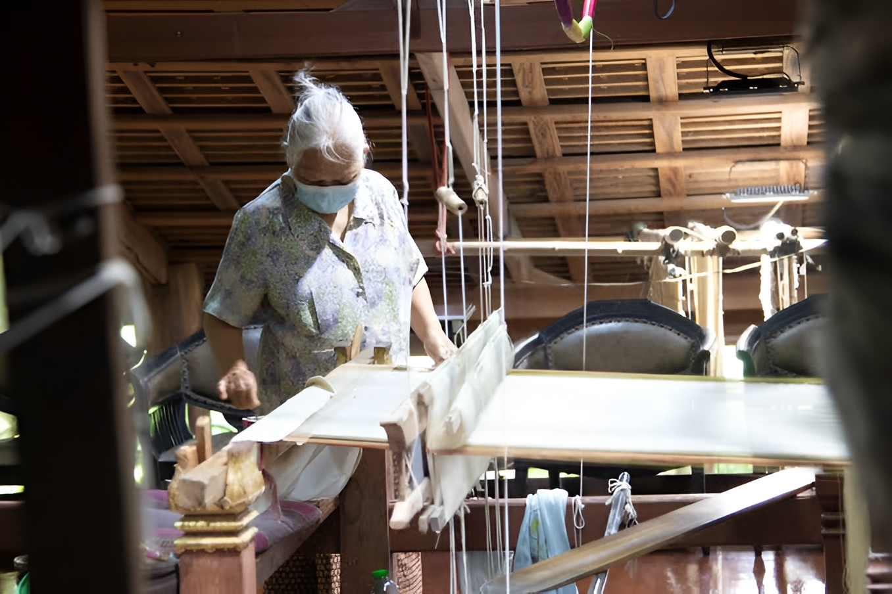
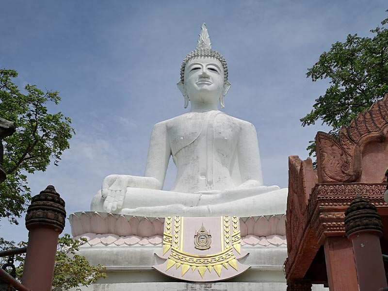
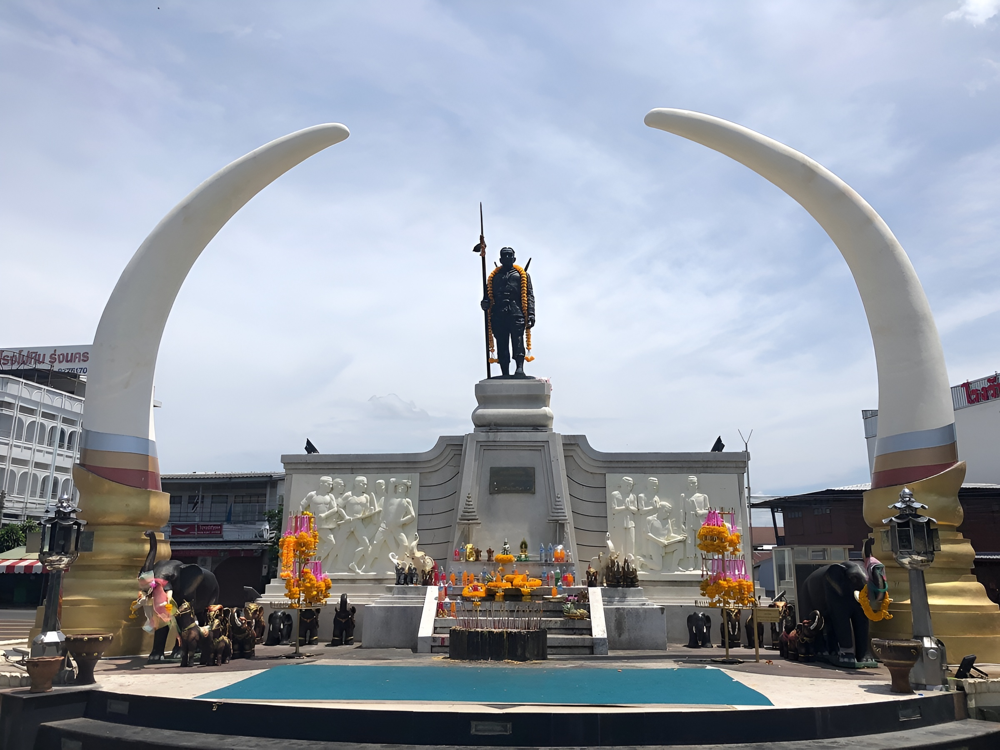
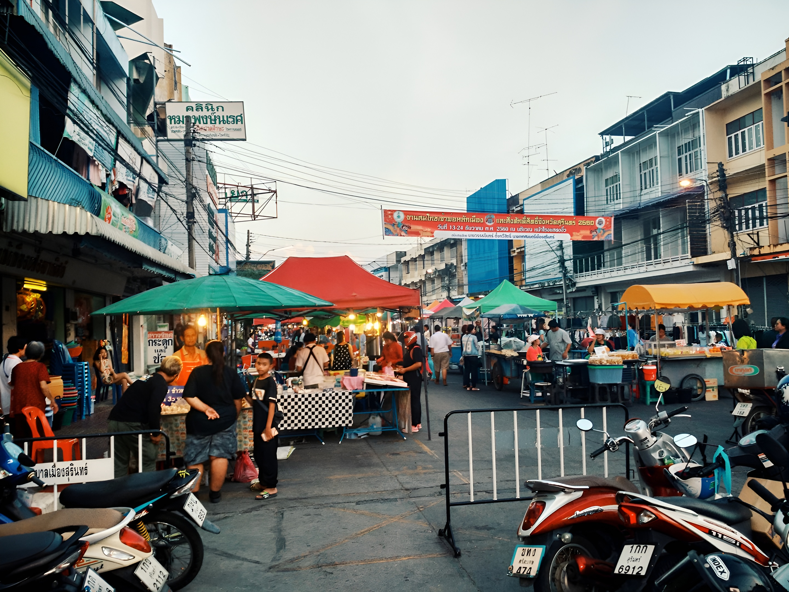

สื่อดิจิทัลปฏิสัมพันธ์ท่องเที่ยว
7 จุดหมาย
จังหวัดสุรินทร์
สุรินทร์
เที่ยวไหนดี
เส้นทางท่องเที่ยวครบ จบในวันเดียว
"สุรินทร์ถิ่นช้างใหญ่ ผ้าไหมงาม ประคำสวย ร่ำรวยปราสาท
ผักกาดหวาน ข้าวสารหอม งามพร้อมวัฒนธรรม"
แผนที่เส้นทางท่องเที่ยว
เดินทางไป–กลับภายในวันเดียว · จัดเรียงตามช่วงเวลา
บ้านท่าสว่าง
พระยาสุรินทร์ฯ

ศูนย์คชศึกษา หมู่บ้านช้างบ้านตากลาง
จุดเริ่มต้นของ "ถิ่นช้างใหญ่" ตามคำขวัญจังหวัด ชุมชนชาวกูยที่สืบทอดภูมิปัญญาการเลี้ยงและฝึกช้างมาอย่างยาวนาน นักท่องเที่ยวจะได้เห็นวิถีชีวิตของคนกับช้างที่ผูกพันกันมาหลายชั่วอายุคน ก่อนต่อยอดไปยังศูนย์คชศึกษาในบริเวณใกล้เคียง
"เริ่มต้นการเดินทางที่ศูนย์คชศึกษา หมู่บ้านช้างบ้านตากลาง แหล่งวัฒนธรรมการเลี้ยงช้างของชาวกูย"

ปราสาทศีขรภูมิ
โบราณสถานที่สะท้อน "รวยปราสาท" ในคำขวัญจังหวัดได้ชัดเจนที่สุด ปราสาทหินทรายห้าหลังเรียงบนฐานเดียวกัน สลักลวดลายทับหลังอันวิจิตร เป็นหลักฐานของอารยธรรมขอมโบราณที่เคยรุ่งเรืองในภาคอีสานใต้ เหมาะสำหรับเดินชมและถ่ายภาพในช่วงแดดเช้า
"ปราสาทศีขรภูมิ โบราณสถานสำคัญที่สะท้อนอารยธรรมขอมโบราณ"

หมู่บ้านทอผ้าไหมบ้านท่าสว่าง
แหล่งกำเนิด "ผ้าไหม" ที่ขึ้นชื่อที่สุดของจังหวัด ด้วยลายทอโบราณอย่าง "หางกระรอก" ที่ต้องใช้ตะกอนับพันเส้นบนกี่ทอมือ ผ้าไหมที่นี่เคยใช้ตัดเป็นฉลองพระองค์และของขวัญระดับประเทศ นักท่องเที่ยวได้ชมกระบวนการทอมือทุกขั้นตอนแบบใกล้ชิด
"หมู่บ้านทอผ้าไหมบ้านท่าสว่าง แหล่งผลิตผ้าไหมที่มีชื่อเสียงของจังหวัดสุรินทร์"

วนอุทยานพนมสวาย
ภูเขาไฟเก่าที่กลายเป็นปอดสีเขียวของจังหวัด จุดพักผ่อนหลังบ่ายที่เต็มไปด้วยธรรมชาติ มีบันไดขึ้นสู่ยอดเขาเพื่อกราบสักการะสิ่งศักดิ์สิทธิ์และชมทัศนียภาพของเมืองสุรินทร์แบบพาโนรามา เหมาะกับช่วงแดดร่มลมตกของบ่ายแก่
"วนอุทยานพนมสวาย จุดชมวิวธรรมชาติที่สวยงามของจังหวัดสุรินทร์"

อนุสาวรีย์พระยาสุรินทร์ภักดีศรีณรงค์จางวาง
อนุสรณ์สถานของเจ้าเมืองคนแรกผู้ก่อร่างสร้างเมืองสุรินทร์ เป็นจุดสักการะที่ชาวสุรินทร์เคารพนับถือ และเป็นจุดเริ่มต้นของช่วงเย็นที่พาไปสัมผัสวิถีชีวิตเมืองอย่างใกล้ชิด ก่อนต่อไปยังปราสาทบ้านพลวงและตลาดยามเย็น
"มาสักการะ สิ่งศักดิ์สิทธิ์ของเมืองสุรินทร์"

ปราสาทบ้านพลวง
ปราสาทหินทรายสีชมพูขนาดเล็กแต่งดงามด้วยลวดลายจำหลักที่คมชัดที่สุดแห่งหนึ่งของอีสานใต้ ยิ่งงดงามขึ้นในแสงเย็น สะท้อนศิลปะสถาปัตยกรรมขอมโบราณที่ยังคงหลงเหลือรายละเอียดไว้อย่างสมบูรณ์
"ปราสาทบ้านพลวง โบราณสถานที่สะท้อนศิลปะสถาปัตยกรรมขอมโบราณ"

ตลาดไนท์บาร์ซ่าสุรินทร์
ตลาดยามเย็นที่เต็มไปด้วยอาหารหลากหลายชนิด
"ตลาดไนท์บาร์ซ่าสุรินทร์ แหล่งรวมอาหารเหมาะสำหรับการฝากท้องในยามหิว"
จังหวัดสุรินทร์เที่ยวครบ ทุกสถานที่ ที่น่าสนใจ
7 จุดหมาย — หวังว่าเส้นทางนี้จะช่วยให้ทริปของคุณราบรื่นและประทับใจ